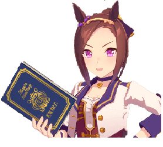

Beginner Guide

What is Uma Musume?
Uma Musume: Pretty Derby is an online gacha game with rogue-lite elements focused on horse racing. Instead of real horses, you train anthropomorphized horsegirls known as "uma musume."
The core gameplay revolves around Career mode, where you raise stats, manage random events, and compete in races. Each completed run creates a "Veteran" version of your character that can be used in other modes.
Energy System
The game includes an Energy system, but it is very forgiving. A full bar allows multiple runs, and stamina recharges quickly. Players can also use premium currency to refill stamina at a low cost.
Gacha System
There are two types of gacha: character (trainee) and support card banners. Support cards are extremely important for improving performance, so players should not focus only on characters.
The game includes a "spark" system—after 200 pulls on a banner, you can guarantee the featured unit.
Career Mode (Core Gameplay)
Career mode is the main part of the game. Each run lasts about 70 turns, where you train stats, manage energy, and complete race goals.
You select:
- Your character
- Legacies (past trained characters)
- Support cards
Training & Stats
The five main stats are Speed, Stamina, Power, Guts, and Wit.
- Speed: Max running speed
- Stamina: How long you can maintain speed
- Power: Acceleration and hills
- Guts: Reduces stamina usage
- Wit: Skill activation rate
Training with support cards gives bonus stats and unlocks stronger effects through friendship.
Racing
Races are automatic but strategic. Players choose a running style:
- Front Runner
- Pace Chaser
- Late Surger
- End Closer
Choosing the correct strategy for your character is important for winning.
Other Game Modes
- Daily Races: Earn money and materials
- Legend Races: Limited-time challenges for rewards
- Team Trials (PvP): Compete against other players
Conclusion
Uma Musume is a complex but rewarding game that combines strategy, RNG, and long-term progression. With practice, players can build powerful characters and enjoy both casual and competitive play.